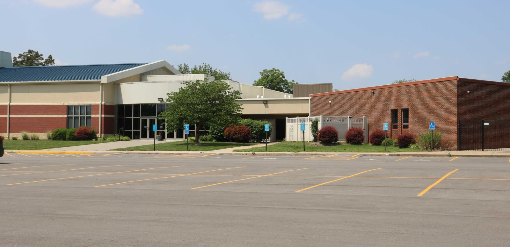
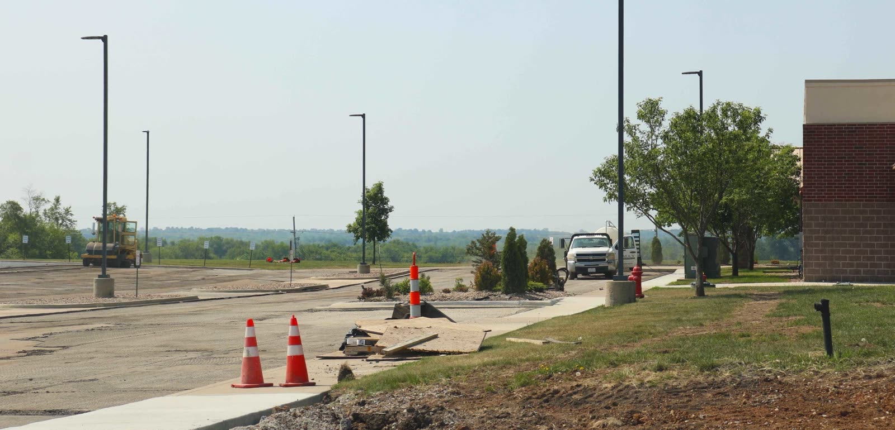

Concrete & asphalt services for Olathe properties
Whether you’re a homeowner needing a new driveway, a property manager handling a parking lot, or a GC coordinating a commercial build, we handle every phase in-house, from excavation through finished surface.

Commercial & Residential Concrete
Driveways, parking lots, sidewalks, curbs, repair & replacement.

Commercial & Residential Asphalt
Parking lots, driveways, overlays, milling, patching, repairs.

Excavation, Site Prep & Drainage
Grading, subgrade prep, drainage, catch basins, water management.
Local knowledge. KC metro standards.
Much of Olathe's newest industrial land is on the south side of the city, near I-35. The city rebuilt Hedge Lane between 167th and 175th Street, which used to be a gravel road, to open up about 530 acres of undeveloped industrial ground. Heartland Coca-Cola opened a 700,000-square-foot production campus off Hedge Lane near 175th Street in June 2025. In the I-35 Logistics Park, about a mile and a half from the 159th and Lone Elm interchange, one building alone runs about 822,000 square feet. Park 169, near US-169 and 167th Street, was planned in 2024 for 13 warehouse and industrial buildings. Loaded trailers turn and back across the concrete at plants and warehouses all day, so on Olathe's industrial ground the dock aprons and heavy-duty truck lanes get most of our attention.
Olathe's soil is harder on pavement than it looks from the surface. The USDA soil survey for Johnson County maps much of the Olathe area as Chillicothe, Woodson, and Oska-Martin soils, and it rates each of them very limited for streets because of shrink-swell and low strength. Woodson shows up across a lot of the flat ground in town, from the Hedge Lane and 167th Street area to downtown. Its subsoil jumps to about 45 percent clay roughly 8 inches down, and USDA describes a perched water table 6 to 24 inches below the surface from about November through June. Olathe's January normals run from about 20 degrees overnight to the high 30s in the afternoon, so water trapped in that layer freezes and thaws through the winter. On a truck lane or apron, slab thickness is the last thing we decide, after the subgrade and the drainage.
On the home side, Olathe grew from about 37,000 people in 1980 to more than 141,000 in 2020. Census Bureau estimates for 2024 count more than half of the city's homes as built between 1980 and 2009, so a lot of original driveways here have already been through at least 15 winters. The drive out from Grain Valley takes 45 minutes to an hour, depending on which end of Olathe the job is on. Wendell or Daniel makes that trip to look at the site and writes the proposal, whether it's a warehouse apron or a two-car drive.
Olathe, KS
Service coverage
- Commercial parking lots, drives, and flatwork
- Residential driveways, sidewalks, and patios
- HOA and multifamily work, scheduled around residents
- Industrial concrete pads and heavy-duty asphalt
- Municipal and church maintenance contracts
- Free onsite proposals, with callbacks the same or next business day
Paving in Olathe: FAQs
Can apron and truck lane work at our Olathe plant be timed around our busy season?
That's usually how we'd want to do it. We split the apron into sections and work them in an order that keeps some doors open, then move traffic onto the new concrete once it's ready for loaded trailers. A large property along I-35 can be spread over more than one season, so the heaviest phases land when your docks are slowest. The phase calendar is written into the proposal up front, and your shipping people can plan around it.
Why does so much of a south Olathe truck court budget go into the ground?
Because the soil there holds water and doesn't let it go. USDA describes Woodson soil, which is mapped around Hedge Lane and 167th Street, as somewhat poorly drained with very slow permeability, and its survey data show a subsoil with high shrink-swell. A truck court on that ground needs a base and drainage built for those conditions, and a thicker slab alone doesn't solve it. Paying for that work at the start costs less than tearing out panels after they settle under loaded trailers.
We're building on one of the new industrial sites off Hedge Lane or 167th Street. Will you work under our general contractor?
Yes. We work for general contractors and for owners directly, and we self-perform the excavation, base, drainage, and concrete with our own crews and equipment. Having the grade work and the paving under one schedule cuts down on handoffs between trades. We're fully licensed and insured and can provide the paperwork for owners and municipalities that require it. Our work carries a one-year warranty on labor and workmanship.
How does Olathe's pre-pour inspection work on a drive approach?
Olathe requires a right-of-way permit for any work that needs a pre-placement inspection, and the city names drive approaches and sidewalks as the typical examples. By the city's description, its right-of-way generally begins about 11 feet from the back of the curb. The inspection has to be scheduled at least 24 hours ahead through the city's online permit portal. Permits are good for 60 days, so we fit the inspection and the pour inside that window and go over the rules with the city again before we start.
Free proposal for your Olathe project
Callbacks the same or next business day. In-house crews. Free, detailed proposals.
- Callbacks the same or next business day
- Priced by the estimator who answers for it
- One-year written workmanship guarantee
Prefer to talk? (816) 220-7777